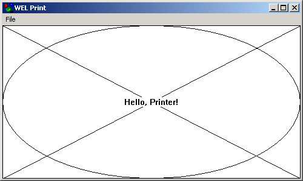

Printer Sample

Compiling
To compile the example:
- Launch [BENCH].
- Select Use existing Ace (control file) and click OK.
- Browse to Eiffel50\examples\wel\printer\.
- Choose Ace.ace
- Choose the directory where the project will be compiled, by default the same directory containing the Ace file.
- Click OK.
Running
After launching the program, a window will be displayed as illustrated above. Selecting "Print" from the "File" menu will open a print dialog which will
allow you to specify a printer and additional print information before printing the contents of the window.
Under the Hood
MAIN_WINDOW inherits WEL_FRAME_WINDOW and
the feature `on_paint' has been redefined to display the ouptut in the client area. A WEL_PRINT_DIALOG is used to retrieve the print options before the printing occurs
through the interface provided by a WEL_PRINTER_DC.
This sample contains the following classes:
See Also
WEL_PRINT_DIALOG